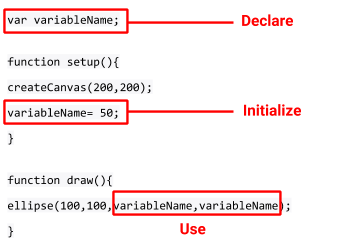

Overview
In this learning activity, students create their own variables to set the position, size and grey scale color of their shapes without repeating code.

Overview
In this learning activity, students create their own variables to set the position, size and grey scale color of their shapes without repeating code.
Suggested Duration
90 minutes
Objectives
Students will be able to:
Student Outcomes
Abstraction:
Algorithms:
Programming:
Vocabulary
| Scope | Where a variable can be ‘seen’ by the computer within a program. |
|---|---|
| Global Variables | Variables declared outside of a function which can be used in any function. |
| Local (script) Variables | Variables declared within a function whose scope is limited to that function. |
| var | Declaration of variable words in p5.js. |
Resources
Position Elements With Custom Variables
Suppose we want to have 5 ellipses in a row. This is one way to do it.
ellipse(120, 70, 60, 60);
ellipse(200, 70, 60, 60);
ellipse(280, 70, 60, 60);
ellipse(360, 70, 60, 60);
ellipse(440, 70, 60, 60);
This is a repetitive task, and error-prone. Instead, we can use variables. So far, we have used p5 built-in variables: mouseX, mouseY, width and height. We can read their values, but not change them. Our next step is to create our own variables! There are three steps to creating a variable:
var variableName".
variableName a value. This is called an assignment operation. We are assigning a value to our variable. If I write variableName = 50, every time I use my variable name, the program will replace it with the number 50.
ellipse(100,100,variableName,variableName), our ellipse will be 50px wide and 50px high. These three steps will be used in three lines of code. See the image below.

Notice where we placed these lines of code. The declared variable is way at the top before setup. We gave it a value in setup, and then use it in our draw function although we can use it in setup as well. Play with the variable here. Change the value or use it for the x or y location of the ellipse.
To make the code in the previous example more efficient, we'll declare our own variable, and call it y with var y. Then we assign a value to our variable. We told the program that there is a container called y. Now we need to give it a value to hold inside that container. We will do that by setting the value of our variable to 70. Now if we want to move all five ellipses 10 pixels down, we can just change the value of our variable: one line of code instead of five. See the code below and here is the link to the code.
Keep in mind that it does not matter what we name these variables. If we are creating these variable we can call them whatever we want. Try changing the name to any random word or letter to demonstrate that it is just a "container" word that holds a value which we can then apply and quickly change in multiple places in our code. In this example I called the variable 'bob' and it works the same way.
It is good practice, however, to give our variables names that make sense to us so that we would remember what they are used for. If you are using a variable for a position on the y-axis, it's a good idea to call that variable "y", "ypos" or the like.
There is also a shortcut to creating our own variables. We can declare, and initialize a variable in one line of code. See the image below:

You'll see custom variables created this way very often, but it won't work using built in variables like width, height, or random. In this code change the value of variableName to 70, then set the value to the width of the canvas using the built in variable 'width'.
Change the Position of the Face
Draw a simple face here by adding eyes and a mouth. No matter where you place it, the positions of face, eyes, and mouth, are going to be relative to the top left corner of the canvas:

Now let's create and initialize variables for the x and y location of the face. We can keep the values the same and nothing will change. Keep working on your drawing, but you can refer to this example, here.
width and height so that the placement of the shapes remained the same when we changed the canvas size. We'll need to apply this idea by placing the features in relation to the position of the face using the variables that we created.
Let's first position the features relative to the center of the face. We created a variable for the x position and y position of the face. Let's return those variables to their original location and then add the features based on that variable. If the left eye is 20 pixels to the left of the center of the face, and 20 pixels higher, the ellipse should be placed at (x-20,y-20). The right eye will be 20 pixels to the right of the center of the face, and at the same height as the left eye placing it at (x+20,y-20). Reference this example.